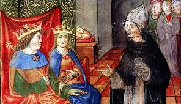
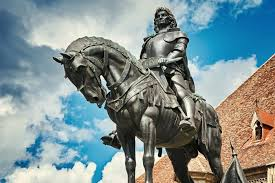

Mátyás királyt az utókor nagy reneszánsz uralkodónak tartja, aki Magyarországon először honosította meg ennek az új itáliai mozgalomnak és stílusnak az eredményeit. Udvarába nemcsak számos olasz humanistát, hanem természettudósokat, művészeket is meghívott. Könyvtára, a Bibliotheca Corviniana gyűjteménye messze földön híres volt.
Az is tény azonban, hogy a Mátyás kulturális eredményeit, mecenatúráját dicsérő, külföldön jó hírét keltő humanisták ezért a tevékenységükért bőkezű anyagi ellenszolgáltatásban részesültek a királytól, ezért bizonyára gyakran túloztak is.
Mátyás őszintén fogékony volt az itáliai humanizmus iránt, de egyúttal messzemenően tudatában volt annak, hogy a művészetpártolás fontos uralkodói erény. Kedvelte az antik szerzőket, és szívesen vett részt humanista szimpóziumokon, vitákban. Ennek a szellemi irányzatnak a magyarországi fő képviselője Vitéz János volt, bár ő személyesen soha nem járt olasz földön. A királyi titkárok és az udvari kancellária vezetői között sok Itáliában tanult, magas állású klerikus volt. A korszerű tanokkal rokonszenvező főpapok Mátyás egyetértésével számos tehetséges fiatalt küldtek Itáliába tanulni.

Mátyás nemcsak uralkodóként, hanem hadvezérként is kiemelkedőt alkotott. Kortársai az egyik legjobb stratégaként tartották számon. Kitűnően tájékozódott a külpolitikában, tájékozott volt az antik és a korabeli katonai irodalomban. Diplomáciai és hírszerző hálózata révén megismerte az ellenfelek terveit.
A 15. század második felében az európai háborúk többnyire korlátozott céllal, egy-egy vár vagy tartomány meghódításáért folytak. Mátyás hadászata is ezt követte, ritkán vállalkozott költséges és kockázatos, sok katona életét követelő döntő ütközetekre. Céljait portyázásokkal, rajtaütésekkel, az ellenséges terület pusztításával, egyes várak elfoglalásával igyekezett elérni.
Mátyás király stratégiája egészében eredményes volt. Ellenfeleivel szemben jelentős katonai sikereket ért el, például a harmadik osztrák háborúban (1482–1487). A török elleni harcokban belátta, hogy serege csak az aktív védelemre képes és ennek megfelelően járt el. Azt is látta, hogy a török belátható időn belül nem tud átfogó támadást indítani Magyarország ellen.
Azért fordult Csehország és Ausztria ellen, hogy Magyarországot erősebbé tegye a hatalmas Oszmán Birodalom várható hódító kísérleteivel szemben. Ezek a tervei azonban végső soron irreálisnak bizonyultak; Magyarország erőforrásai nem voltak elegendőek hódító szándékai megvalósítására, inkább kimerítették az országot.
Az utókor a későbbi fejlemények ismeretében ezt Mátyás hibájának értékeli. Fodor Pál történész, turkológus, az MTA Történettudományi Intézetének főigazgatója szerint Mátyás általában 10 ezer katonát tartott fegyverben uralkodása második szakaszában.
| Nyugati és északi hadjáratok (Csehország, Ausztria) | Törökellenes hadjáratok | Belpolitikai harcok |
|---|---|---|
| Mátyás fő célja a cseh királyi cím megszerzése és a Német-római Birodalommal szembeni fellépés volt. | Mátyás nem indított nagyarányú támadó hadjáratokat az Oszmán Birodalom ellen. | Belpolitikai harcai elsősorban a központosított királyi hatalom kiépítésére és a bárói liga hatalmának megtörésére szolgált. |
| 468-ban keresztes hadjáratot indított Podjebrád György cseh király ellen. | A déli végvárvonal megerősítésére és a védekezésre összpontosított. | Uralkodása elején (1458–1459) le kellett vernie a cseh Giskra zsoldosvezért. |
| 1485-ben elfoglalta Bécset, amelyet országa fővárosává tett. | Jelentősebb sikere az 1463-as jajcai hadjárat, amellyel Boszniában alakított ki védelmi övezetet. | És a magyar bárók (pl. Szilágyi Mihály, Garai László) ellene szőtt összeesküvéseit. |